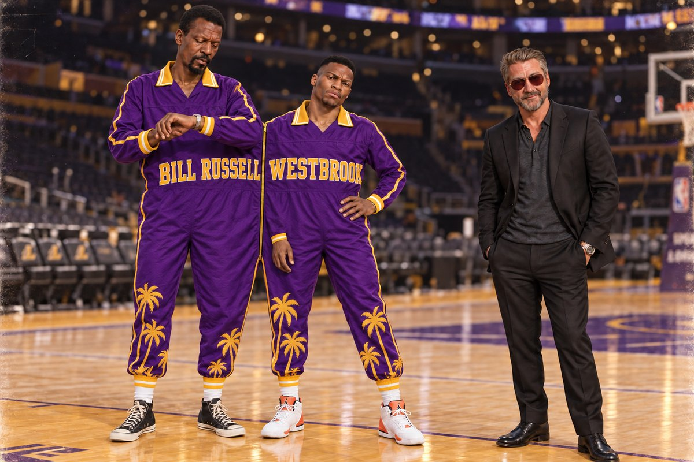
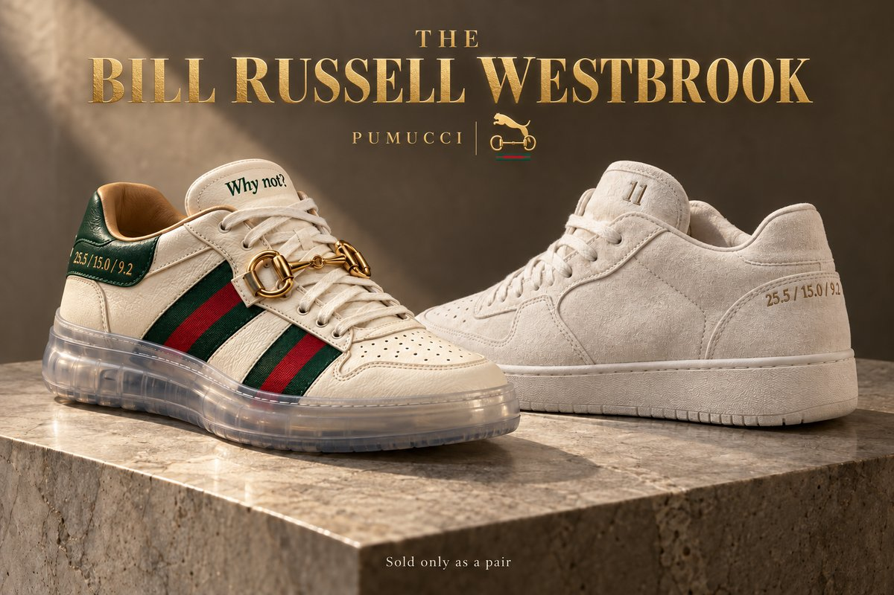
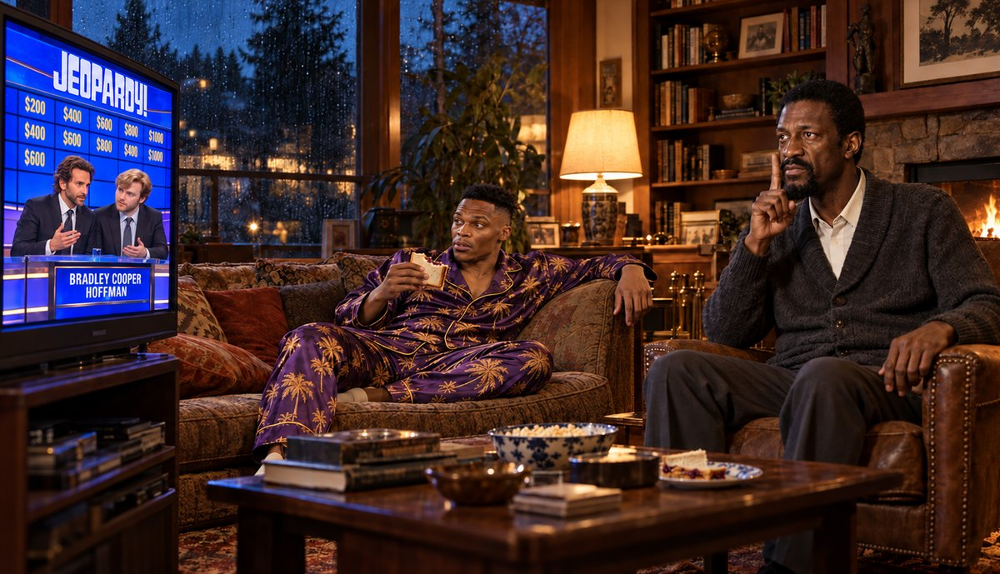
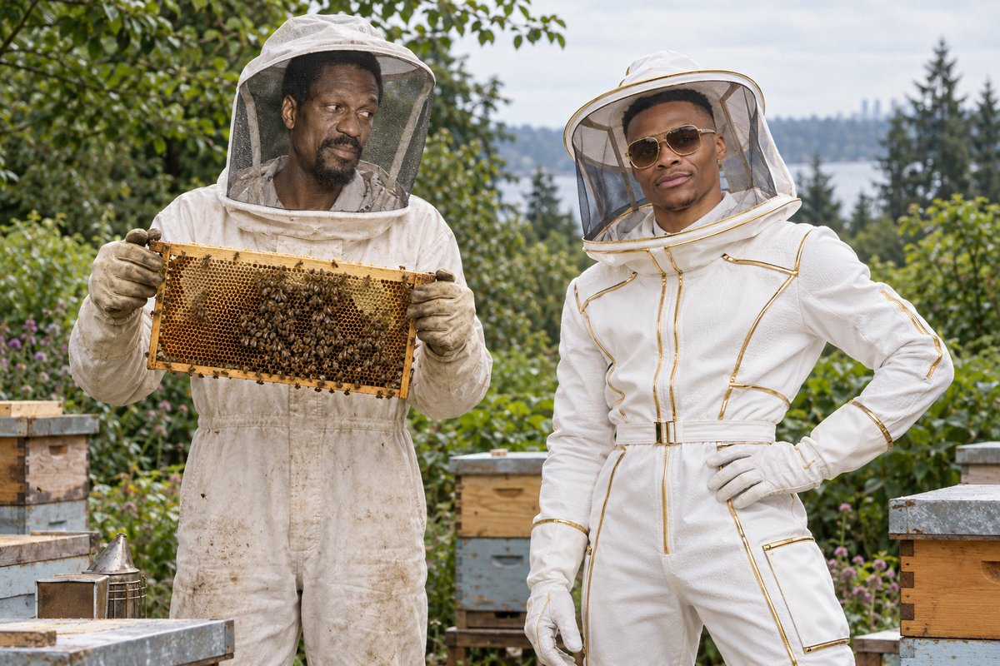
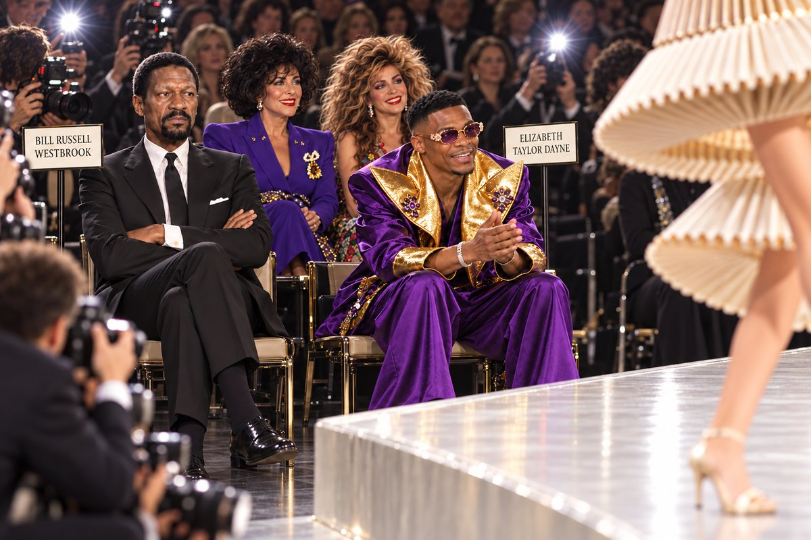
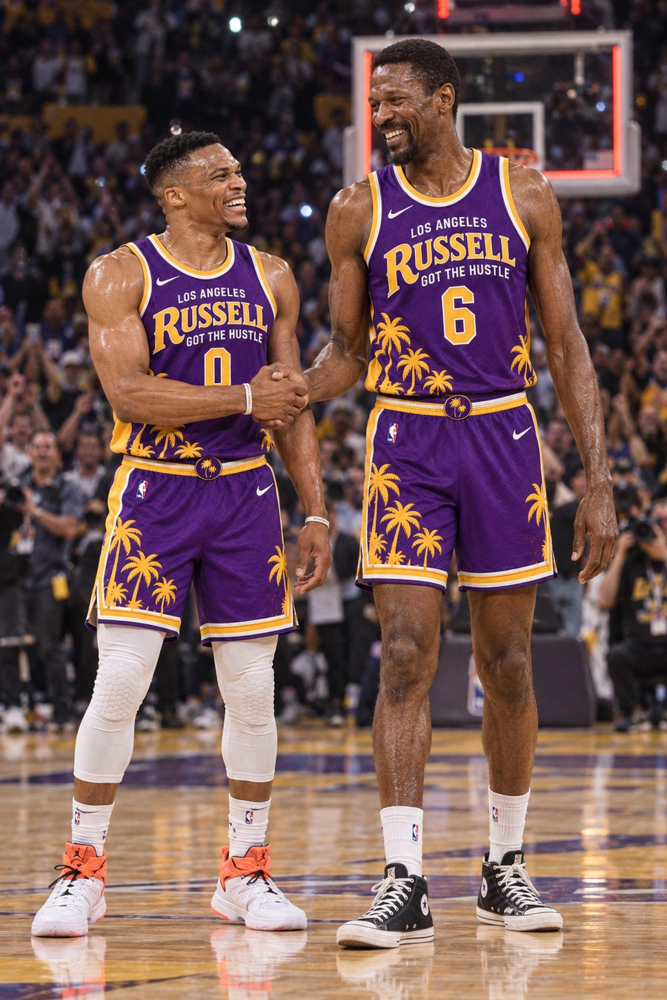
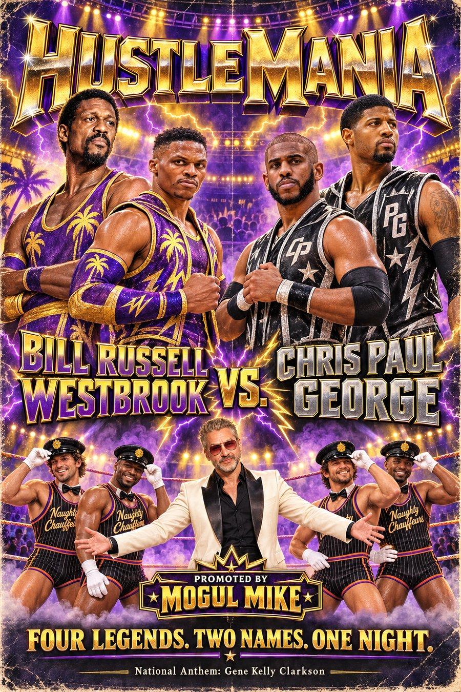

Vol. II · No. 3 · Week 5 Edition
The Fieldston Dispatch
All the Legends That Are Fit to Print
Feature · Russell Got The Hustle
Bill Russell Westbrook
Six MVPs, 11 rings, one triple-double record, one hotel room and a single jumpsuit: inside the odd couple powering Mogul Mike’s runaway leader.

Los Angeles — On the first morning of the season, two of the most decorated players in the league stood at center court in Los Angeles, zipped into one jumpsuit. It had two collars, four sleeves and a single zipper, in purple and gold, with palm trees running up both legs and a name stitched across each half of the chest. Russell Westbrook struck a pose. Bill Russell checked his watch. He had never worn purple and gold before; he had spent a career beating it.
“I have worn a cape,” Russell said afterward. “I have never worn a roommate.”
They are not supposed to fit together. Russell won five MVPs and 11 championships and treated his own statistics as a rumor. Westbrook won an MVP by averaging a triple-double for an entire season, something no one had done since Oscar Robertson in 1962, and he has spent his career collecting numbers the way other men collect watches. They have never shared a decade, a city or a philosophy of dress.
This season, Mogul Mike has made them share a hotel room. He has also given them a name.
One Brand, Two Men
“One’s about winning. One’s about winning loudly,” Mike said. “Same religion. Different choir.”
The numbers suggest the choir is in tune. Westbrook is averaging 16.7 points, 4.8 rebounds and 5.9 assists off the bench. Russell is averaging 8.8 points, 10.2 rebounds and 3.3 blocks as the starting center. Put them together and Bill Russell Westbrook is good for 25.5 points, 15.0 rebounds and 6.9 assists a night: a Westbrook stat line, assembled by committee. Their Core Four Scores, +2.9 and +2.8, are a tenth apart.
By the Numbers · Per Game
- Bill Russell8.8 pts · 10.2 reb · 1.0 ast · 3.3 blk
- Russell Westbrook16.7 pts · 4.8 reb · 5.9 ast · 0.7 blk
- Bill Russell Westbrook25.5 pts · 15.0 reb · 6.9 ast · 4.0 blk
Through Week 4. Neither half has produced this line alone.
The two halves have begun, in small ways, to trade places. Russell is turning the ball over more often than Westbrook, 2.0 times a game to 1.9. Westbrook is making 87.2 percent of his free throws; Russell is making 59.7. Russell, who retired a full decade before the NBA painted a three-point line, is shooting 35.7 percent from behind it.
Mike has already put the stat line on a shoe. The Bill Russell Westbrook, a Pumucci collaboration between Puma and Gucci, is sold only as a mismatched pair. The left shoe is Russell’s: plain white suede, no logo, the number 11 stitched small on the tongue. The right shoe is Westbrook’s: green-and-red web striping, a gold horsebit across the laces, a translucent sole and “Why not?” on the tongue. Stitched into the heel of each is the combined line, 25.5 / 15.0 / 6.9, which neither man has ever produced alone and which, Mike points out, you only get if you buy both.

Russell asked that the statistics on his shoe be replaced with his rings. He was told there was not room for 11. The designer Michael Kors, asked for his view, called the pair “the first honest shoe.”
The launch drew at least one complaint. Walt Frazier, who has had a Puma named after him since 1973 and plays for Lewis, said no one consulted him. “Fifty-three years I’ve had a shoe, and nobody ever asked me to share it,” Frazier said. “I would have said no. But they should have asked.”
Russell Got The Hustle is 21-7 in the simulated season and 32-12 in categories, first in both. It is 13-4 on the road. Mike credits the room assignments.
Rain, Jeopardy and the Bees
The education runs in both directions, and neither direction is comfortable.
On off days, Russell hosts Westbrook at his home outside Seattle, where it is usually raining and where the evening program does not change. Jeopardy is at 7. Russell does not miss it, does not talk during it and does not accept answers that are not phrased as questions.
“He answers everything in the form of a question,” Westbrook said. “Even at dinner. I asked him to pass the salt and he said, ‘What is the salt?’”
One recent episode featured Bradley Cooper Hoffman, who buzzed in first on every clue and then argued with himself about the answer. Russell called his Final Jeopardy wager “undisciplined.” Westbrook bet on him anyway.

Then there are the bees. Russell keeps hives behind the house and makes his own honey, and he has insisted Westbrook suit up for a full inspection, veil and gloves included. This is the rare outfit Russell chose that Westbrook liked.
“Best fit I’ve had all year,” Westbrook said. “Why not?”

In return, Westbrook has taken Russell to the fashion shows. Russell sat in the front row for 40 minutes with his arms folded. When a photographer asked about his look, he answered with the laugh, the one that used to carry across Boston Garden, and nothing else.
“He’s got the beard. He’s got the height. He’s got the presence,” Westbrook said. “He just doesn’t like being looked at for anything except winning.”
They were not the only merger in the row. Seated beside them was Elizabeth Taylor Dayne: violet silk and old-Hollywood diamonds on one half, an enormous 1988 perm on the other. Katy Perry Ellis was also in attendance, in a pastel suit she described as “menswear, but louder,” though she was seated just outside the photographers’ frame. The front row, one fashion editor noted, held six people and three names.

Not everyone in the front row saw discomfort. Michael Kors, seated two chairs down, saw a thesis.
“What Bill Russell Westbrook gives us is the self, unzipped,” Kors said. “Russell is restraint. Westbrook is declaration. Most of us spend our lives choosing one. They refuse to choose, and in refusing, they reveal the other side of us, the side we are too afraid to wear. The jumpsuit is not a garment. It is a confession with sleeves.”
“The jumpsuit is not a garment. It is a confession with sleeves.”
Michael Kors
Russell, told of the review, asked what a confession with sleeves was. Westbrook had already ordered three.
The Conviction
What holds it together is the thing they share. Both men play every possession as if it has been personally insulting them. Both believe the all-around game is the only honest one, rebounds and passes and stops as proof of intent rather than decoration. Each, privately, has been studying the other.
“He plays like the scoreboard owes him money,” Russell said of Westbrook. “I respect a man who collects.”
“Eleven rings,” Westbrook said of Russell. “I don’t need to say anything else. He doesn’t either. That’s the problem at dinner.”
The Russell Rule
Mike is a believer in what he calls Russell chemistry, and before the season he came close to adding a third: D’Angelo Russell.
The deal died over denim. Russell had been photographed in a pair of dark, stiff, deep-indigo jeans of the kind known in certain circles as Sucka-Wash, a cut whose infamy traces back to a schoolyard in the Bronx. Westbrook vetoed the move.
“I’ll do the jumpsuit. I’ll do the bees,” he said. “I’m not doing Sucka-Wash. That’s a rule.”
Bill Russell, asked about the controversy, said he did not know what Sucka-Wash was. Three teammates told him it was better that way.
“I have worn a cape. I have never worn a roommate.”
Bill Russell
Around the League
The pairing has drawn reviews from every corner, starting with the people who know each half best.
“I was on the floor with Bill for seven years and he never once let me pick the music,” said Bob Cousy, who won six championships next to Russell in Boston and now runs the point for Lewis. “Good luck, kid.”
“In France, we would call this a marriage,” said Victor Wembanyama, who shares the frontcourt with Russell and is averaging 10.3 rebounds. “Here, they call it a brand.”
Elgin Baylor, back on Mike’s roster for a second season, spent seven Finals trying to get past Russell. He finally has a room across the hall.
“Turns out the only way past him was to be on his team,” Baylor said. “I can hear Jeopardy through the wall.”
David Thompson, the team’s leading scorer at 20.5 points and another holdover from last season, has been in a walking boot since spraining an ankle in Week 4. It has not excused him from promotional duties.
“They still want me in the jumpsuit,” Thompson said. “There’s a fifth sleeve now. I don’t know who sewed it.”
Kawhi Leonard has found his own use for the brand. After a loss earlier this month, he was asked about the defensive effort.
“Bill Russell Westbrook,” Leonard said.
He was asked about his own shooting, 43.5 percent from three. “Bill Russell Westbrook.” He was asked whether he was enjoying the season. There was a long pause, then the laugh. “Bill Russell Westbrook.”
Team officials have since confirmed it is his official no comment.
Next: The Main Event
The brand’s next venture is not basketball. Mike is promoting it himself: HustleMania, a wrestling card set for later this season, headlined by Bill Russell Westbrook against the tag team of Chris Paul George. That is Chris Paul, the league’s steals leader at 1.7 a game, and Paul George. Westbrook has history with both halves. He played two seasons beside George in Oklahoma City and was traded for Paul in 2019.
Mike announced the card at a press event that opened with a full routine from the Naughty Chauffeur Dancers, a holdover from his Laurel Canyon days, performing in matching chauffeur caps and white gloves and building to a slow-motion, synchronized opening of a limousine door. Bill Russell watched with his arms folded, as he had at the fashion shows. Westbrook joined in for the second chorus.
Gene Kelly Clarkson sang the anthem, then joined the dancers for an unscheduled tap break across the limousine hood. Russell, arms still folded, was seen tapping one foot.
“I own Chris Paul. I own the venue. I own the dancers,” Mike said. “I’m not picking a side. I’m picking the gate.”

As for the jumpsuit, it hangs in Mike’s office now, both collars on one hanger. Russell has agreed to wear it one more time. Asked when, he did not hesitate.
“At the parade.”
Westbrook, asked the same question, was already wearing it. ■
Week 4 Standings
- 1. Russell Got The Hustle (Mike)32-12 · 21-7
- 2. Gentlemen’s Agreement (Jess)23-18-3 · 16-11
- 3. Outer Mission Burritos (Paul)24-20 · 12-15
- 4. Hail Mary’s (Mike)21-21-2 · 10-18
- 5. Lew Crew (Lew)18-23-3 · 13-15
- 6. Paint Patrol (Paul)18-23-3 · 17-11
- 7. Nipple-Teets (Jess)18-26 · 10-18
- 8. Lew Crew 2 (Lew)16-27-1 · 12-16
Categories · Simulated games. Ranked by head-to-head category record; top six make the playoffs. Russell Got The Hustle is the only team in the top two of both.
